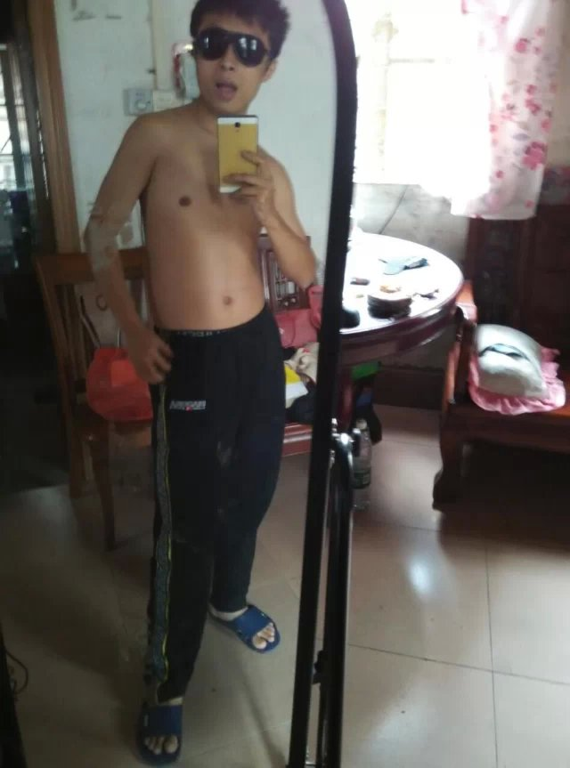
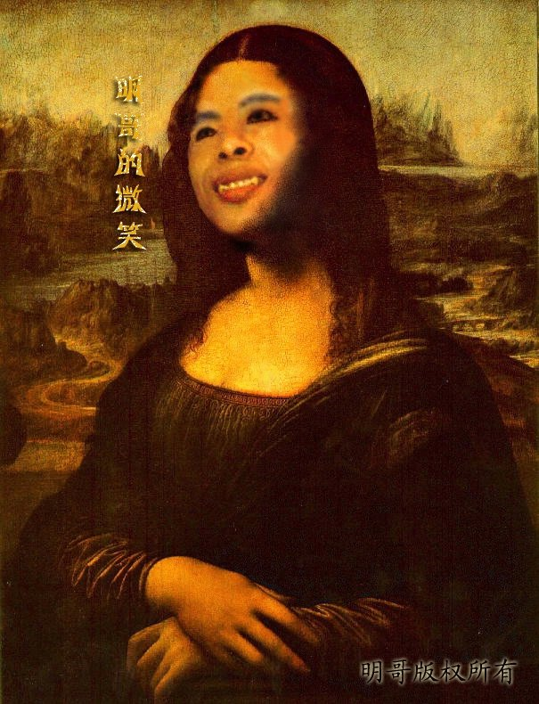
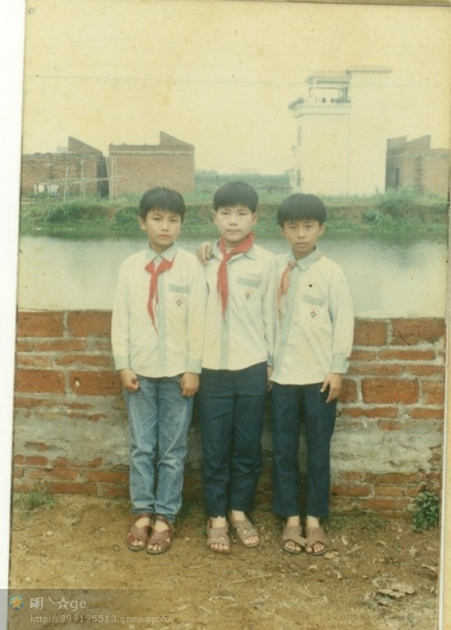
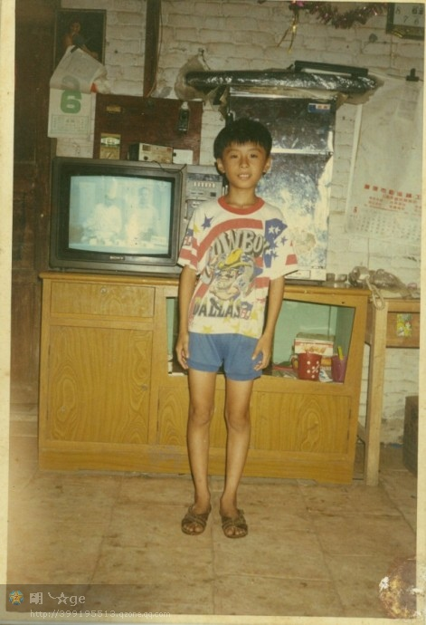

ShearPhoto官方网站：
www.shearphoto.com
官方QQ群：461550716
ShearPhoto 作者：明哥先生 QQ399195513-兼容所有浏览器，乞今最好的切图，截图工具！
向左旋转
向右旋转
重新选择
保存截图
假如：这是一个相册--------试试点击图片




拍照
关闭
3
ShearPhoto作者：
明哥先生 QQ399195513 | ShearPhoto兼容目前所有浏览器 | ShearPhoto官方网站：
www.shearphoto.com
| 官方QQ群：461550716
Copyright © 2015 明哥先生. All Rights Reserved

 明哥先生 QQ399195513 | ShearPhoto兼容目前所有浏览器 | ShearPhoto官方网站：
www.shearphoto.com | 官方QQ群：461550716
明哥先生 QQ399195513 | ShearPhoto兼容目前所有浏览器 | ShearPhoto官方网站：
www.shearphoto.com | 官方QQ群：461550716